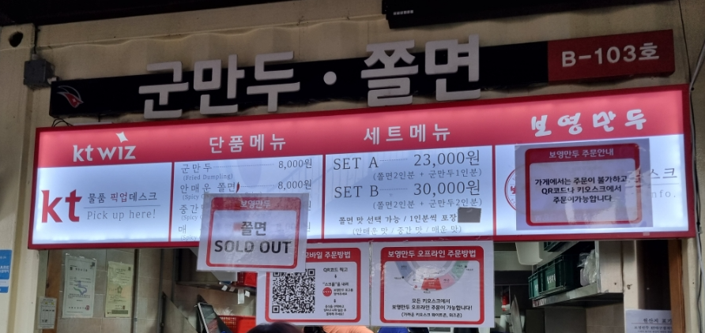

WizPark 주요 좌석 입장료
| 좌석명 | 주중(화/수/목) | 주말(금/토/일/공휴일) | |
|---|---|---|---|
| 중앙 | 중앙지정석 | 15,000원 | 18,000원 |
| 지니존 | 50,000원 | 60,000원 | |
| 내야 | 응원지정석(1/3루) | 15,000원 | 18,000원 |
| 하이파이브존(1루) | 20,000원 | 25,000원 | |
| 휠체어석 | 7,500원 | 90,000원 | |
| 외야 | 외야잔디/자유석 | 9,000원 | 10,000원 |
| 외야테이블석 | 20,000원 | 25,000원 | |
| 키즈랜드 캠핑존(4인) | 120,000원 | 160,000원 | |
WizPark 주요 먹거리
-
보영만두
군만두와 쫄면의 환상 조합! KT 위즈파크 인기 메뉴 1순위!! 매운 맛에 도전해보세요!
주요 메뉴- 군만두 : 8,000원
- 쫄면 : 8,000원
- SET A(쫄면 2 + 만두 1) : 23,000원
- SET B(쫄면 2 + 만두 2) : 30,000원
 -
진미통닭
수원의 유명한 통닭을 KT 위즈 파크에서!! 야구장과 치맥은 진리!
주요 메뉴- 후라이드 통닭 : 21,000원
WizPark 찾아가기
| 주소 |
경기도 수원시 장안구 경수대로 893(조원동) 수원 케이티 위즈 파크 (구 : 경기도 수원시 장안구 조원동 775) 네이버 지도 |
| 버스 |
|
| 지하철 |
화서역 하차 (택시로 10분)
|